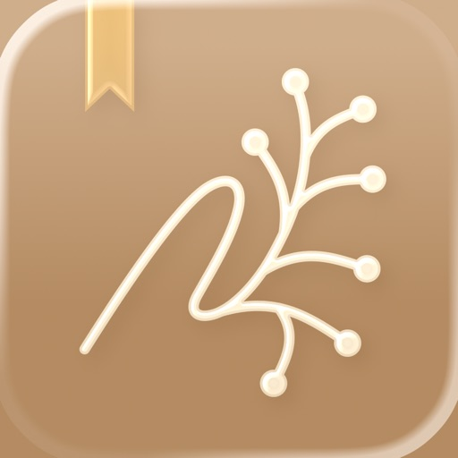
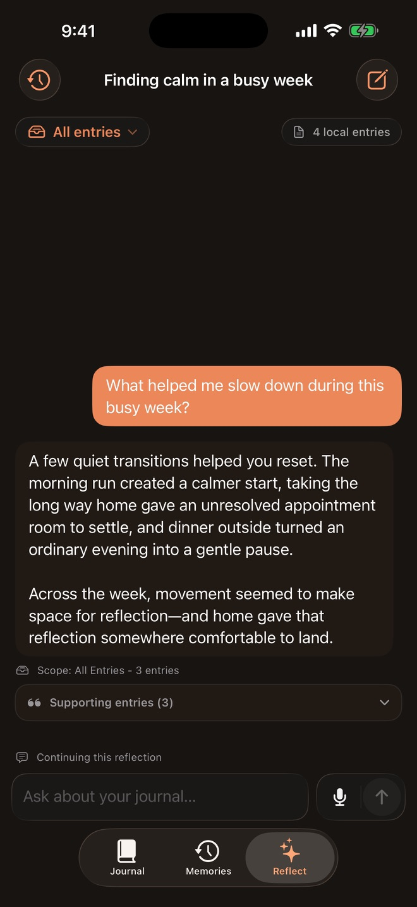
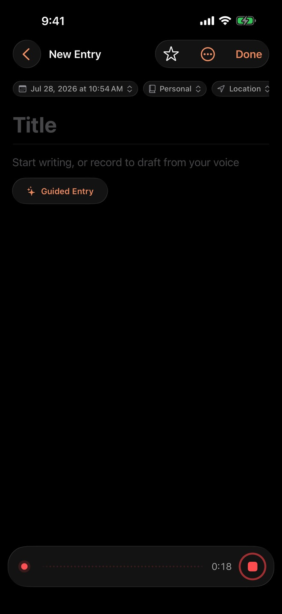

CAPTURE
Start with your own words.
Write an entry or record your voice. Keep photos, places and moments from your day together with the words you want to remember.

DesandarRetrace your steps
Write what’s happening now. Record it in your own voice. Return to your journal through memories, meaningful search and conversations grounded in your entries.

Made for iPhone, iPad and Mac.
Take a look around

CAPTURE
Write an entry or record your voice. Keep photos, places and moments from your day together with the words you want to remember.
RETURN
Search by meaning, discover related entries, and look back through daily, weekly and monthly recaps.
REFLECT
Explore a memory or a recurring theme with Reflect. Follow the entries behind an answer and return to your original words.
A little more to explore
Transcribe recordings on your device and preview a cleaned-up, organized or summarized version. Your original recording and full transcript stay with the entry.

Private by design
Your journal stays on your devices and in your own private iCloud. Apple Intelligence runs on device by default, with optional Private Cloud Compute for selected features. No third-party AI, advertising or tracking.
Read the privacy policyApple Intelligence features require compatible hardware with Apple Intelligence enabled. Optional Private Cloud Compute requires supported hardware and software. Core journaling remains available without Apple Intelligence. Screenshots show the app’s publicly listed example entries.
Apple and the Apple logo are trademarks of Apple Inc. App Store is a service mark of Apple Inc.